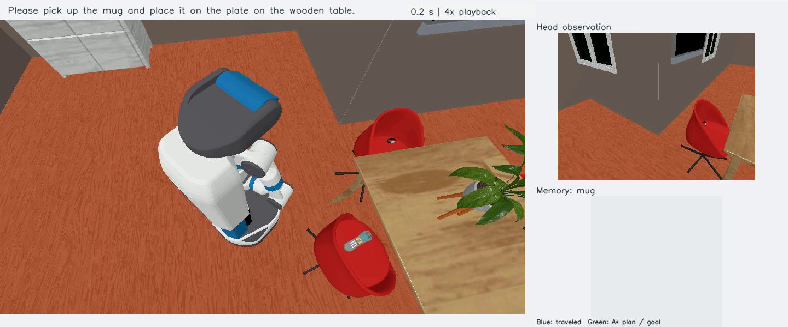

Build from observations
Register RGB-D observations and visual-language features in an online 3D voxel memory, starting without a pre-built map.
Mobile manipulation · Dynamic environments
A memory for
a changing world.
Dynamic Resilient Spatio-Semantic Memory with Hybrid Localization for Mobile Manipulation
From a language instruction to a completed task. DREAM builds a spatial-semantic memory as a robot explores, and updates it when objects move.
1 Beihang University2 City University of Hong Kong3 National University of Singapore

01 / The method
A remembered position can become stale when an object moves or SLAM revises an earlier pose. DREAM updates the evidence used by navigation and manipulation throughout the task.
Register RGB-D observations and visual-language features in an online 3D voxel memory, starting without a pre-built map.
Propagate pose corrections, remove contradicted observations, and prune redundant history with Redundancy-Aware Memory Pruning.
Combine memory retrieval, visual verification, exploration, and manipulation-aware docking to reacquire the target and resume the task.


02 / Real-robot demonstrations
The reference robot combines a Ranger Mini 3.0 base, xArm6 arm, wrist-mounted RGB-D camera, and MID-360 LiDAR. These recordings show the robot, localization, and semantic memory together.
Scenario 01
A complete manipulation sequence, with synchronized views of the robot and its memory.
Scenario 02
Revisit the remembered location, reacquire the object, and continue manipulation.
Further navigation, target search, and manipulation examples.
A separate SLAM demonstration in a 100 × 50 m indoor scene.
03 / Experimental results
Each experiment answers a different question. The physical tasks, residential simulation, and controlled memory comparison use their own protocols and denominators.
50 / 80 complete tasks
Real robot · Four indoor laboratories
DREAM completes 50 of 80 tasks, compared with 39 of 80 for DynaMem. The Wilson 95% intervals are 51.5–72.3% and 38.1–59.5%, respectively; the aggregate difference is not significant at 0.05 (Fisher p = 0.111).
Read the physical evaluation ↗36 / 50 residential tasks
ManiSkill / Fetch · Native-scale objects
One fixed controller, seed 42, and a 900-second robot-action budget. All 36 successes pass independent physics and recording checks; all 14 failures are included. These houses were used during development, so this rate describes the evaluated cohort.
Explore every outcome ↗Completed / 30 tasks per variant
Controlled memory comparison · Ten development houses
With perception, navigation, and Fetch manipulation held fixed, dynamic memory completes 22/30 tasks and static memory 14/30. The difference is 26.7 percentage points, with a paired house-level 95% bootstrap interval of 6.7–50.0 points.
View the comparison records ↗Inside the simulation
Browse cross-room task recordings with synchronized scene, camera, memory, and route views. Filter by house and outcome, or follow the selected relocation demonstrations.
Open the video gallery
Explore → Reacquire → Pick → Place04 / Open resources
Implementation, hardware setup, task definitions, and recorded outcomes are available with the project.
Method, physical experiments, and comparisons.
02 / Real robotHardware setup, calibration, services, and robot control.
03 / SimulationFetch controller, task inputs, and reproducible evaluation.
Building the robot? Find the hardware guides and CAD assets ↗
Citation
If you use this work in your research, please cite the paper.
@misc{yan2026dynamicresilientspatiosemanticmemory,
title={Dynamic Resilient Spatio-Semantic Memory with Hybrid Localization for Mobile Manipulation},
author={Zhijie Yan and Shufei Li and Ze Zhang and Xin Liu and Yuhang Zheng and Zuoxu Wang},
year={2026},
eprint={2606.00576},
archivePrefix={arXiv},
primaryClass={cs.RO},
url={https://arxiv.org/abs/2606.00576}
}